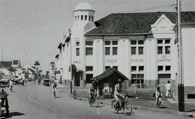
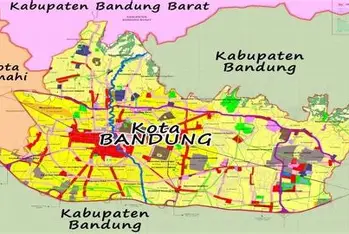
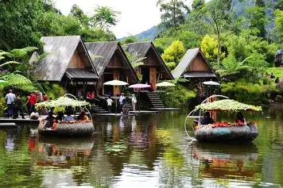
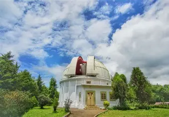
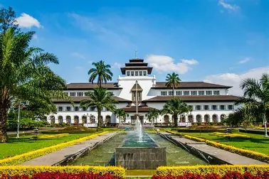

Sejarah

Bandung awalnya adalah sebuah daerah pedesaan yang subur, dialiri Sungai Citarum dan dikelilingi pegunungan. Nama Bandung diyakini berasal dari kata “bendungan” karena terbentuknya Danau Bandung Purba akibat letusan Gunung Sunda ribuan tahun lalu, atau dari perahu ganda (perahu bandung) yang digunakan Bupati Bandung pertama.
Pada awal abad ke-19, Gubernur Jenderal Herman Willem Daendels membuka Jalan Raya Pos (Grote Postweg) dari Anyer sampai Panarukan, dan jalurnya melewati wilayah Bandung. Sejak saat itu, Bandung mulai berkembang pesat. Pada tahun 1810, pusat pemerintahan Kabupaten Bandung dipindahkan dari Krapyak (Dayeuhkolot) ke lokasi yang sekarang menjadi Alun-Alun Bandung.
Bandung kemudian tumbuh sebagai kota modern pada masa kolonial Belanda. Banyak bangunan bergaya arsitektur Eropa didirikan, hingga Bandung dijuluki “Paris van Java”. Pada tahun 1955, Bandung juga menjadi tuan rumah Konferensi Asia-Afrika, peristiwa bersejarah yang mempertemukan negara-negara Asia dan Afrika untuk memperjuangkan kemerdekaan dari kolonialisme.
Geografis

Kota Bandung terletak di bagian tengah Provinsi Jawa Barat, berada di cekungan yang dikelilingi pegunungan, sehingga bentuk wilayahnya menyerupai mangkuk raksasa. Kota ini berada pada ketinggian rata-rata sekitar 768 meter di atas permukaan laut, dengan titik tertinggi ±1.050 meter dan terendah ±675 meter.
Luas wilayah Kota Bandung adalah sekitar 167,67 km², dan secara administratif terbagi menjadi 30 kecamatan dan 151 kelurahan. Kota ini berbatasan langsung dengan Kabupaten Bandung di hampir seluruh sisinya, serta sebagian kecil dengan Kabupaten Bandung Barat.
Wisata

Bandung terkenal sebagai salah satu destinasi wisata favorit di Indonesia. Keindahan alam, budaya, kuliner, dan belanja menjadikan kota ini ramai dikunjungi wisatawan.
Boscha

Observatorium Bosscha adalah sebuah pusat penelitian astronomi yang terletak di Lembang, Kabupaten Bandung Barat, sekitar 15 km di utara Kota Bandung. Observatorium ini didirikan pada tahun 1923 oleh Nederlandsch-Indische Sterrenkundige Vereeniging (NISV) atau Perhimpunan Astronomi Hindia Belanda, dan resmi dibuka pada 1928..
Gedung sate

Gedung Sate adalah ikon dan landmark Kota Bandung yang terletak di Jalan Diponegoro, Bandung. Bangunan ini dibangun pada tahun 1920 oleh pemerintah kolonial Belanda sebagai pusat administrasi Hindia Belanda, dan sekarang berfungsi sebagai kantor Gubernur Jawa Barat.